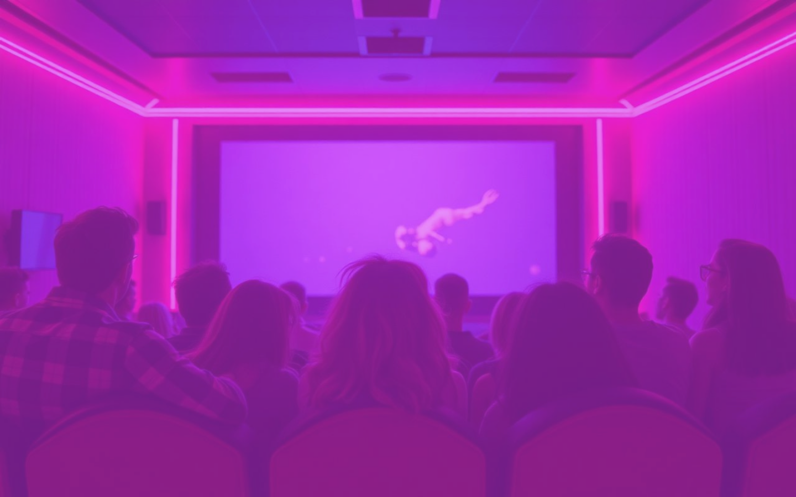

Webs para negocios que empiezan o que todavía no tienen una.
Soy María García Ramos. Diseño tu web, la programo y te ayudo con el contenido. Todo lo hago yo, desde Málaga.
Antes de nada
¿Tu negocio necesita web?
Marca lo que te pasa. Si te ves en dos o más, tener web ya te compensa.
Trabajo
Ver todos
Proyectos

Tití Studio
Tienda online de camisetas dibujadas a mano en Málaga.

Hotel Casa Marisa
Home pensada para que se reserve directamente en la web.
AutoNorm
Fiscalidad y normativa de vehículos en España, en una sola ficha.

Evento de cine adolescente 2000
Web de un festival de cine, hecha como proyecto final de máster.
Cómo trabajo
De la idea a tu web publicada
Hablamos
Me cuentas tu negocio y qué necesitas que haga la web.
Propuesta
Te paso por escrito qué incluye, el precio y los plazos.
Diseño
Diseño la web y la revisamos juntos antes de programar.
Publicación
La programo, la publicamos y te explico cómo actualizarla.

Quién hay detrás
Una persona, no una agencia
Soy María García Ramos, diseñadora y desarrolladora front-end. Trabajo como autónoma y garram.studio es mi marca. Hablas siempre conmigo: la misma persona diseña tu web, la programa y la publica.
Diseño webFront-endContenido para redesMálaga